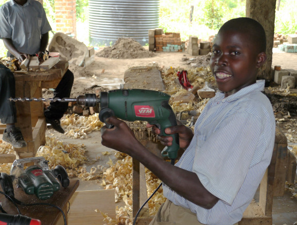
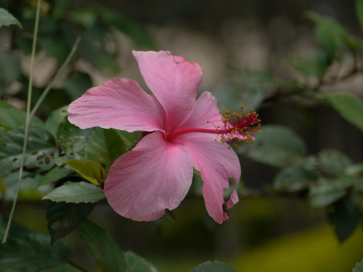
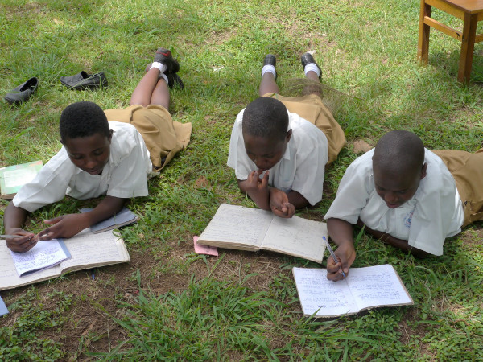
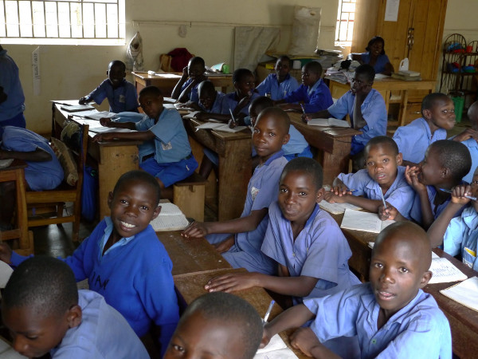
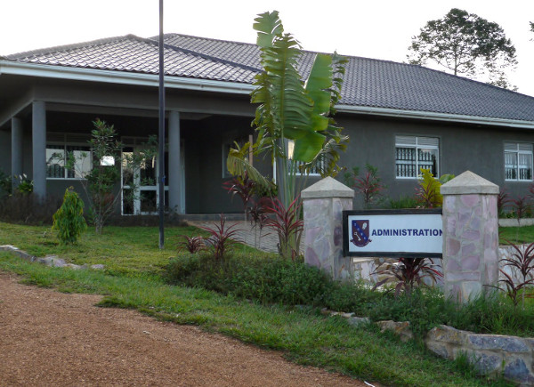

November 2012
Bram Moolenaar, penningmeester van ICCF Holland, bezocht het Kibaale
Children's Centre in november 2012. Dit is zijn verslag.
Klik op de foto's hieronder om een grotere versie te zien.
Veel meer foto's zijn te vinden op
Google+.
Er is ook een
print versie van het verslag
Stroom in Kibaale
Er zijn veel beloftes gedaan om Kibaale op het stroom net aan te sluiten.
Vooral rond verkiezingstijd. Er is nu eindelijk een werkploeg aan de slag om
palen te plaatsen en draden te verbinden. Dit werk wordt met de hand gedaan,
ik zag meer dan een dozijn mannen een lange paal overeind duwen en trekken.
Maar er is nog geen transformator en iemand merkte op dat bij een moeras
de kabels ontbreken. We zullen zien wanneer het echt werkt. Als er
stroom is dan zal de sfeer in Kibaale drastisch veranderen. Helder licht in
plaats van olielampjes. Luide muziek en TV geluiden overal. De goede kant is
dat een timmer werkplaats elektrisch gereedschap kan gebruiken, de mais molen
zal draaien en het mogelijk zal zijn om te lassen. Ik verwacht dat de
bedrijven flink zullen groeien. We zien al een voorbeeld in onze timmer klas,
ze gebruiken daar nu elektrisch gereedschap. Zie de foto met de Vim
boormachine
:-).
Voor het project zou er een eigen transformator komen, maar nu gaan de draden
alleen naar de kliniek. Blijkbaar was er onvoldoende budget. De
betrouwbaarheid van het stroom net is toch slecht, dus de generator en zonne
energie blijven bestaan. De bedrading tussen de gebouwen moet vervangen
worden, het wordt oud en een mindere kwaliteit is twintig jaar terug gebruikt
om geld te sparen. Onderhoud is noodzakelijk om het project draaiende te
houden.
|
|
|

Met stroom kan een timmerman professioneel werken (zeker als het Vim is!)
|

Groen en bloemen trekken vogels aan
|
|
|
Vogels en bloemen
Toen ik voor het eerst op het project kwam was het leeg vlak land. Door de
jaren zijn er veel bomen en struiken geplant. Elke keer als er een gebouw werd
neergezet werd ook de omgeving aangepakt. Vooral rond de kliniek en de
middelbare school. Het ziet er daardoor niet alleen groen en vriendelijk uit,
het trekt ook diverse vogels aan. Ik heb zwaluwen, wevers en reigers gezien,
en zelfs een Ibis. En verschillende andere vogels waar ik de naam niet van
weet.
|
Internet
Communicatie met Kibaale is altijd lastig geweest. In de eerste jaren konden we
alleen brieven en fax gebruiken. Toen kwam er internet naar Masaka, en moest
de staf een uur reizen om naar een internet café te gaan. We hebben satelliet
internet gebruikt, maar dat werd te duur. Telecom bedrijven introduceerden een
paar jaar terug mobiel internet, maar in Kibaale was het signaal van slechte
kwaliteit. Vorig jaar heeft Airtel een booster toren opgezet met een goed
signaal, eindelijk werkt het!
Het is een beetje langzaam, maar goed genoeg om
email uit te wisselen en iets op te zoeken op het Internet. Met een beetje
geluk kan ik naar het sponsor kantoor een vraag sturen en dezelfde dag antwoord
krijgen. Wanneer de Airtel toren niet werkt, wat soms gebeurt, kunnen we nog
MTN gebruiken. Maar daarvan is het signaal erg zwak. Ik heb diverse antennes
meegenomen om uit te proberen. Een ervan bleek redelijk te werken, dus we
kunnen MTN als reserve gebruiken. De volgende stap is om een draadloos netwerk aan te leggen, zodat meerdere mensen een abonnement kunnen delen.
|
|
|

Middelbare school studenten studeren buiten onder een boom
|

Derde klas in the lagere school
|
|
|
Business as usual
Het project draait nu grotendeels zonder problemen. Het is heel goed te zien
dat er elke dag honderden kinderen en families geholpen worden. Natuurlijk
zijn er individuele successen en teleurstellingen.
Een meisje is na het voltooien van de catering opleiding bij een hotel in
Kyotera gaan werken. Na een jaar had ze genoeg geld opgespaard om een vervolg
opleiding te doen. Dat is wat we graag zien: Na onze initiële hulp zijn de
kinderen in staat om op eigen benen te staan.
Het gaat niet altijd zo goed, er vallen ook kinderen af. Elk kind is
verschillend en we hebben er veel uit probleem gezinnen. Dat heeft ook gevolg
voor de kinderen. Er wordt veel energie gestoken in het adviseren en
begeleiden. Een jongen had zich misdragen en was voor een jaar in de wacht
gezet, hij moest gedurende die tijd speciale sessies volgen. Nu is hij in het
tweede jaar van de vervolgopleiding en is hij gemotiveerd en maakt goede
vooruitgang.
|
|
Timothy center
Kibaale is onze grootse plaats, er gaan hier 831 kinderen naar lagere school,
middelbare school en de vakopleiding. Vervolg opleidingen zijn in diverse
andere scholen, vaak in de stad. We misten nog een goede "A-levels" school,
daarom is
er vorig jaar een opgericht in Masaka. Alleen voor meisjes op dit moment. De
eerste groep is aan hun examen begonnen terwijl ik er was. De Timothy center
is meer dan een school, het is opgezet als divers training centrum. Er worden
ook leraren getraind. Het is gebouwd naast een moeras, daardoor heeft het een
prachtig uitzicht. We overwegen om een aantal huizen te verhuren. De meeste
Canadese vrijwilligers wonen nu hier, Kibaale staat onder leiding van
Ugandezen.
|
|
|

Het Timothy center in Masaka
|
Plannen voor de toekomst
We hebben meer keuzemogelijkheden nodig voor de beroeps opleidingen. We hebben
soms kinderen moeten laten vallen omdat we geen passende opleiding kunnen
vinden. Ik heb voorgesteld om een agrarische school op te zetten. Mogelijk
gecombineerd met een onderzoekscentrum. Als we de oogst kunnen verbeteren en
de gewassen minder gevoelig kunnen maken voor ziektes zou dat enorm helpen. We
weten dat veel van de kinderen uiteindelijk agrariër worden, we kunnen er maar
beter voor zorgen dat ze daar goed voor opgeleid zijn. Het onderzoekscentrum
kan helpen om betere teelt methoden te vinden. Ik was bijvoorbeeld op bezoek
bij een gezin waar er een ziekte in de Matoke zit waardoor die geen vruchten
produceert. Als we een Matoke variant kunnen vinden die resistent is tegen de
ziekte kunnen we hun leven compleet veranderen. Als je iemand weet die ons zou
kunnen helpen om dit op te zetten, laat het ons weten!
Bram Moolenaar
veel meer foto's op Google+.
top
|

{kind=link}
{kind=link}
{kind=link}
{kind=link}
{kind=link}